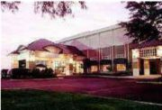

Hi Folks:

The Louisville Reunion is now history. It was the 60th reunion for the 4th Marine Division Association. Our next reunion will be in Fredericksburg, Virginia. Our reunion hotel will be the Holiday Inn Select, 2801 Plank Road, Fredericksburg, VA. Fredericksburg, a town of of about 21,000, is 50 plus miles south of Washington D. C. Selection of Fredericksburg as the reunion city was driven by its proximity to Quantico which is about 20 miles to the north of the town. We won't receive many details until the March 2008 4th Marine Division Association newsletter comes out. Details will also be included in our Spring 2008 C123 Update. We do know that the Fredericksburg reunion will begin the day after Labor Day 2008.
Attendees at the Louisville reunion were:
Rowland & Kay Lewis*
Jo & Tim Reynolds*
Gene Rackovitch*
Joline Doersam*
Forrest & Betty Southwick*
Stan & Tillie Buch*
Nick Zingaro*
Richard & Sue Cooper*
Carroll, Harold, and Janis Gregory*
Richard & Irene Lowe*
Elvin Johnson*
John & Mary Cave*
Russ Dahl & Audrey Neiss*
Beverly Dowdy, daughter**
Vivian Dalton, daughter**
Virginia Boss, daughter**
Brad Cooper, son**
Adam & Paula Roberts**
Janet Polen
David Polen, Son
Douglas and Barbara Polen, Son and Daughter-in-law
* Attended company dinner.
** Cooper family members
The prime attraction of the 2008 reunion is expected to be the National Museum of the Marine Corps. Open to the public on 13 November 2006, the National Museum of the Marine Corps is a lasting tribute to U.S. Marines - past, present, and future. Situated on a 135-acre site adjacent to the Marine Corps base in Quantico, Virginia, the Museum's soaring design evokes the image of the flag-raisers of Iwo Jima and beckons visitors to its 118,000-square-foot structure. World-class interactive exhibits using the most innovative technology will surround visitors with irreplaceable artifacts and immerse them in the sights and sounds of Marines in action.
TAPS: It is our sad duty to report the passing of our friend and comrade Ed Rajkowski. Ed was a regular at our reunions until he was overcome by ill health. His last reunion was Baltimore in 2004. He was 86 years old. Ed has a special place in the memory of yours truly dating from February 26, 1945 when he and three or four others picked me up from a shell hole where I had been laying for several hours slowly bleeding to death from a couple of bullet holes. They carried me out at considerable risk to themselves where I was able to get life saving blood transfusions and other treatment.
C123RD: As you know I have been trying to assure that we preserve the historical data on our website (www.c123rd.com) when I am no longer around. I thought we had the problem solved when my former business partner agreed to host it on his servers. That didn't work out since he blocks access to his servers on weekends. That won't do for us because we want the site to be available 24/7. We are now talking to the U. S. Marine Corps archive folks. They are interested in our data and have told me they will be in touch on how the transfer will occur. I hope it works out, it would be a shame to lose all the historical information that John Seymour and others spent so much time and effort developing. We still urge those who have memories to tell to put your stories in writing and send them to me or Joline. It is your chance to preserve your memories for future generations to read.
TRIVIA: Recently while surfing TV channels looking for something worth watching I came across a movie in progress by the name of, Sands of Iwo Jima. It is an old movie, released in 1949 starring John Wayne. I watched the remainder of the movie of found that I still didn't like the movie because it wasn't realistic and made too much of raising the flag. I had watched the movie in its entirety in 1949 in an unlikely place. It was showing at a Japanese movie theater in Yokohama, Japan. The theater had been taken over by the occupation authorities. The movie was well attended by Army personnel, I didn't know any other ex-marines so I don't know, if the Army personnel were interested in a movie about Iwo Jima or they came to see a John Wayne movie. He was very popular among military personnel
A Note from Joline: I just returned from a visit with dad (John Seymour) in his nursing home in NY. His health has improved and he looks much better, but his memory troubles him a bit.. His temperament has improved and he spends a great deal of time on his passion - old movies. I showed him photos of the KY reunion, and he was delighted. He sends his best wishes to everyone and is thankful for the notes and calls he has received. I marvel at the fact that the Marine Corps is now 231 years old. That means 231 years of Semper Fi, of which you all are a proud part. Many blessings to you for all the holidays to come.
We are looking forward to seeing everyone in Fredericksburg for our 61st reunion.
Semper Fi:
Rowland and Joline
This
page written by Rowland Lewis and Joline Doersam
Maitained on the website by Rowland Lewis.
Last Modified November 2007